RTR: Imperium Surrectum
RTR: Imperium SurrectumMinor Greeks 5: Ionia and western Asia Minor
2023-08-19 · ahowl11
Welcome back to another dev diary about the new Greek factions of RIS! This time, we are looking at IONIA and wider WESTERN ASIA MINOR. Though large swathes of this area had fallen under either Seleucid or Ptolemaic control by 270 BC, we still have THREE factions in this area for you, aside from Kios and Byzantion, which we already previewed as part of the Northern League.
So let's delve straight into it and make our way to KYZIKOS, a city in Mysia situated on the Arktonnesos peninsula (modern Kapıdağ). If we were to describe the ancient Kyzikans in one word, it would be "f***in rich" - okay, I admit it, that was two words. Why, you wonder, and I will give the word to good old Strabo of Amaseia (ca. 63 BC-25 AD), the Greek geographer (12.8.11): "Kyzikos is an island in the Propontis, being connected with the mainland by two bridges; and it is not only most excellent in the fertility of its soil, but in size has a perimeter of about five hundred stadia (= ca. 80-90km). It has a city of the same name near the bridges themselves, and two harbours that can be closed, and more than two hundred shipsheds." This is already very impressive - a big income from its booming agriculture, two harbours with sheds for over 200 ships and a large territory, but this is not all: "This city rivals the foremost of the cities of Asia in size, in beauty, and in its excellent administration of affairs both in peace and in war. And its adornment appears to be of a type similar to that of Rhodes and Massalia and ancient Carthage." Importantly, the Kyzikans possess the necessary talent to make the most out of their position, both economically and militarily, and Strabo thus feels reminded of Rhodes, Massalia and Carthage when describing the beautiful buildings of the city. Finally, Strabo tells us that the Romans recognised how awesome the Kyzikans were:
"But the Romans honoured the city; and it is free to this day (24 AD), and holds a large territory, not only that which it has held from ancient times, but also other territory presented to it by the Romans; for, of the Troad, they possess the parts round Zeleia on the far side of the Aisepos, as also the plain of Adrasteia, and, of Lake Daskylitis, they possess some parts, while the Byzantians possess the others. And in addition to Dolionis and Mygdonia they occupy a considerable territory extending as far as Lake Miletopolitis and Lake Apolloniatis itself." A lot of complicated names, but what counts is that they are all Kyzikan.
Now, let's take a step back to the earlier history of Kyzikos. As an economic powerhouse from the beginning, they played a crucial role in international trade: From the 6th century BC until the time of Alexander, the so called Kyzikans were the foremost gold coins in use in Asia Minor and around the Black Sea, with one of them being worth 28 Athenian drachmae. Though Kyzikos itself and its institutions were influenced by Miletos and Athens, the Kyzikans thus influenced the economic situation within the Persian Empire and their famous coins became the role model for the emissions of the Parthian Empire. Though Kyzikos was officially part of the Persian Empire, it was ruled by tyrants for most of the 200 years from the conquests of Kyros to Philip II and Alexander, and preserved most of its autonomy. After the death of Alexander, Kyzikos eventually became part of the Seleucid Empire, but in 270 BC it still wields considerable autonomy, just like Pergamon, so that both are factions in RIS. It later formed a special friendship with the Attalids, since the wife of Attalos I and mother of his successors, Apollonis, hailed from Kyzikos.
That Kyzikos was able to retain its independence under Attalid protection as well was due to the great wealth and easily defendable situation of the city, but also because of its naval prowess: We have already read about the shipsheds in Strabo, and the Kyzikan navy remained a force to be reckoned with throughout the Hellenistic period. In 154 BC, its navy, fighting alongside Pergamon, defeated that of Prusias II of Bithynia, and in 130 BC, after the end of the Attalid dynasty, it successfully resisted an attack by the usurper Aristonikos. its most glorious moment came in 67 BC, when Mithridates VI of Pontos led an army that Strabo numbers at 150 000 men (!) against Kyzikos, only to be utterly defeated. Kyzikos remained free until the early imperial period, and then continued to thrive under Roman rule. In the time of Hadrian, the Kyzikans built a ginormous temple of Zeus, which became one of the seven wonders of the ancient world (replacing the fallen colossus of Rhodes).
Gold Stater of Kyzikos, so called Kyzikan, 450-330 BC, with the Persian archer, the role model for Parthian coinage:
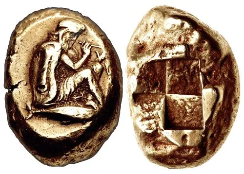
Stele of Demetrios, from Panderma near Kyzikos in the Propontis, ca. 370 BC (now in the Glyptothek in Munich) - the base for our Kyzikan Epibatai:
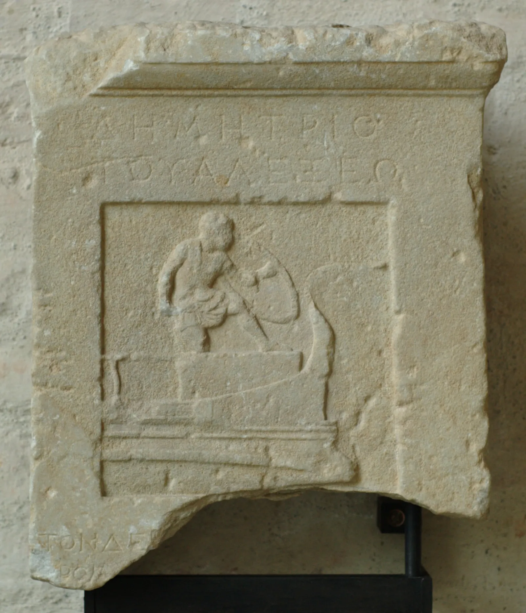
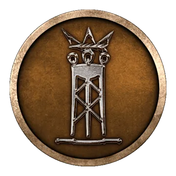
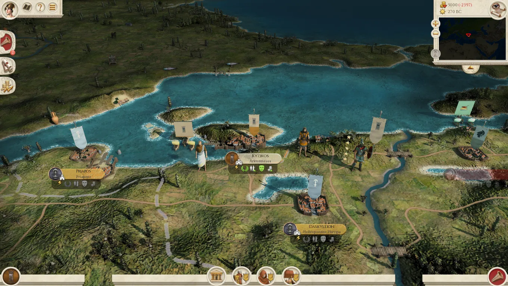
Kyzikan Epibatai
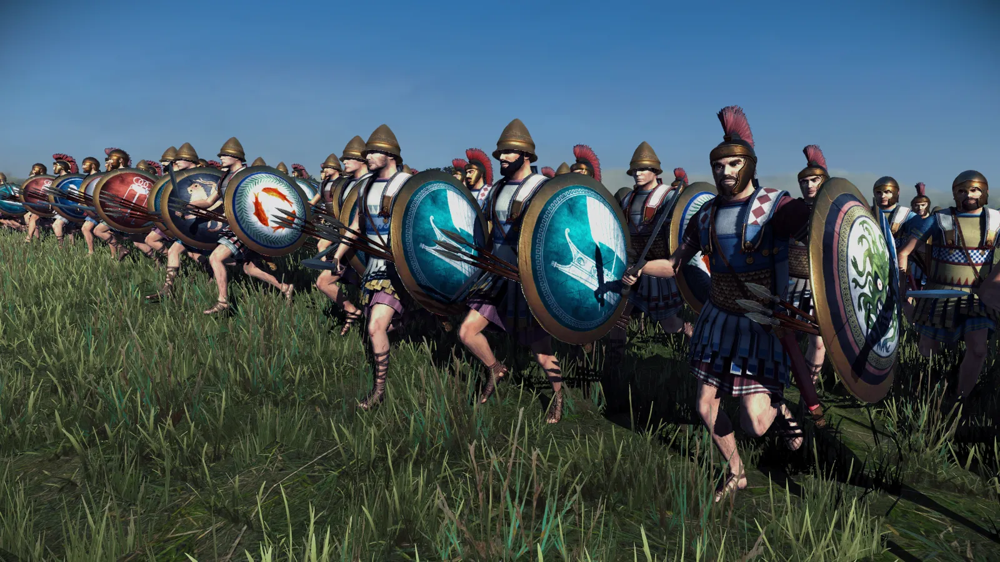
Kyzikan Hoplites
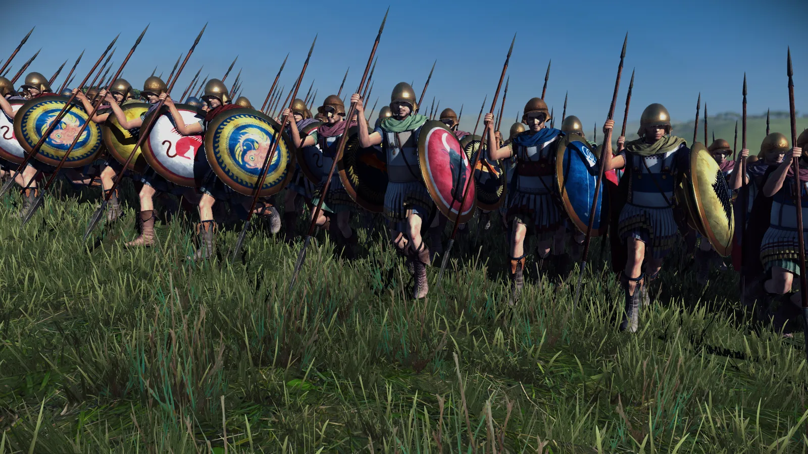
Kyzikan Aspidophoroi
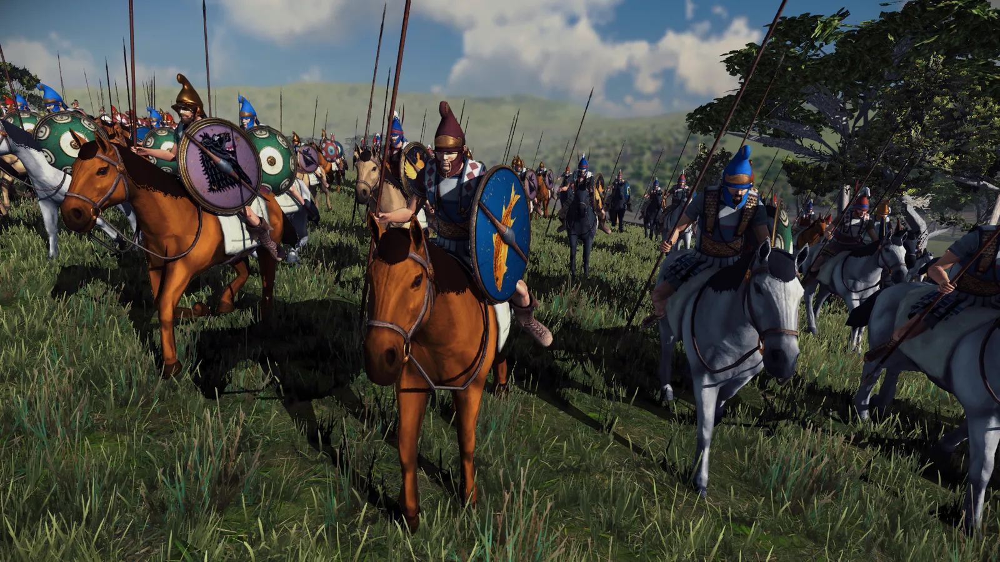
Our second faction is PRIENE, a fairly small city on the Milesian Gulf, whose significance in the ancient world dwarfed its territory. Founded by Carians in almost pre-historic times, Priene was a Ionian city and a member of the Ionian League by the Archaid Period. The Panionion, the central sanctuary of all Ionians, was in fact located on Prienian territory, and the city was the home of one of the seven sages of Greece in the 6th century BC, Bias. Like the other Ionian cities, Priene fell under Lydian rule at this time, which was replaced by Persian rule in 546 BC, though Priene played a starring role during the Ionian revolt in the 490s. After the victories of the Greeks at Salamis and Plataiai, Priene joined Athen's Delian Leage, but only for a while. In the 4th century, the Polis faced an existential crisis, as silting on the Maiandros river cut Priene's access to the sea. The Prienians, who had a reputation of being something like ancient communists, made a radical decisions: Supported by Mausolos, they moved their whole city to a new spot, on the southern side of the Mykale mountain range, which was well watered. Following a plan by Hippodamos of Miletos, the Prienians constructed the new settlement after a detailed, geometric plan. When Alexander the Great arrived at Priene, he acknowledged their radical, egalitarian democracy and left it untouched. However, Greeks are Greeks, and Samos was less happy with its new neighbour, which led to series of minor wars in the late 4th century BC. Though Priene later had to accept the formal overlordship of the Seleucid kings, they proved their independence and strength in 277 BC: For almost two years, the Galatians had been ravaging Asia Minor, and so far, neither the Ptolemaic or the Seleucid monarchs, nor any of the Greek or native cities in Asia Minor, had been able to defeat a Galatian force. Pergamon and Miletos, meanwhile, decided to hide behind their huge walls, watching the Galatians burn down their crops.
Our dear Prienian friends had a great dislike of Milesians, however, and were thus keen to try something else: Sotas, a prominent man in the community, offered to lead their troops and immediately received the support of the Hippotrophoi ("Horse breeders"), apparently some sort of aristocratic class- it turns out that the Prienians had not actually achieved egalitè between all men, but at least they tried. Now, the citizens rallied behind Sotas - his promise of a monetary reward may have helped, too - and an army was formed that would intercept the Galatians before they could burn down even a single farm on Prienian territory. After occupying elevated points in the landscape, the Prienians faced a Galatian charge and won a great victory. These events were later commemorated in an inscription, which concludes thus: "After these things happened, the People courageously committed themselves to the Galatian war." (Inscriptions of Priene, No. 17) This implies further fighting against the Galatians in the following years. Overall, the Prienians seem to have come out on top, and the city had thus become one of only two communities in Asia Minor - the other being Tlos in Lycia - to defeat the Galatians in battle.
The victorious Polis continued to thrive in the next two centuries, until it was befallen by one of the strangest misfortunes in ancient history: Around 170 BC, a teenage boy called Orophernes arrived in Priene, sent by queen Antiochis of Cappadocia. He had been ousted from the royal house as his mother may not have been his real mother and favoured Orophernes' younger son Mithradatas, the later king Ariarathes V. When the father of the two, Ariarathes IV, died in 160 BC, Orophernes tried to seize the throne with Seleucid support. The Romans arbitrated and Cappadocia was split into two halves. However, Orophernes was not very popular among the Cappadocians and soon cast out. Where should he go? His old home Priene seemed like the best option, so the wannabe king headed here, bringing with him 400 talents of the royal treasury. In Priene, he asked his friends to keep an eye on the money so that he would have a reserve for future endeavours. Orophernes' brother, now Ariarathes V, was obviously unhappy with this major theft and when Orophernes went to Syria, he wrote to the Prienians to give the money back. The council of Priene answered stoutly that they would not give the money to anyone as long as Orophernes was alive. The Cappadocian reply was to send an army, which was much larger than anything Priene could field, not least because they were supported by the Attalids. Rhodes and Rome were initially unmoved by Prienian pleas for support while the invaders were ravaging their fields, but eventually, the Senate agreed to arbitrate once again, and when Orophernes died, the conflict was solved for good.
Priene remained free into the days of the Roman Empire, but the Maiandros struck back: Eventually, the new location was also cut off from access to the sea by the silting of the river, and the city lost in meaning, until it was ultimately destroyed by the Turks in 1300.
Temple of Athena (4th century BC) and the Acropolis hill of new Priene
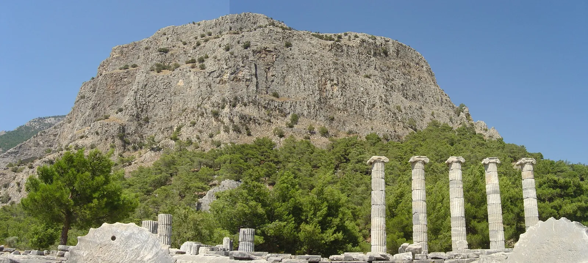
The honourary seat in the theater of Priene on which Alexander the Great put his bum while visiting
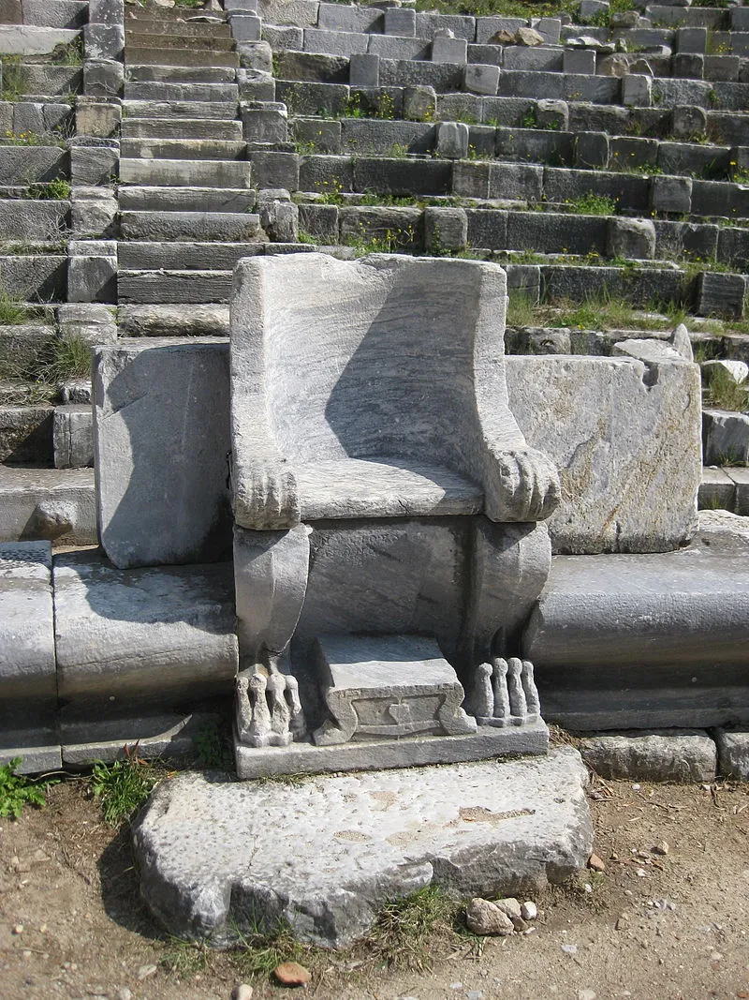
The horrible Maiandros river, known in English as Maeander, from which the expression "meandering" derives - the Prienians knew only too well what it meant
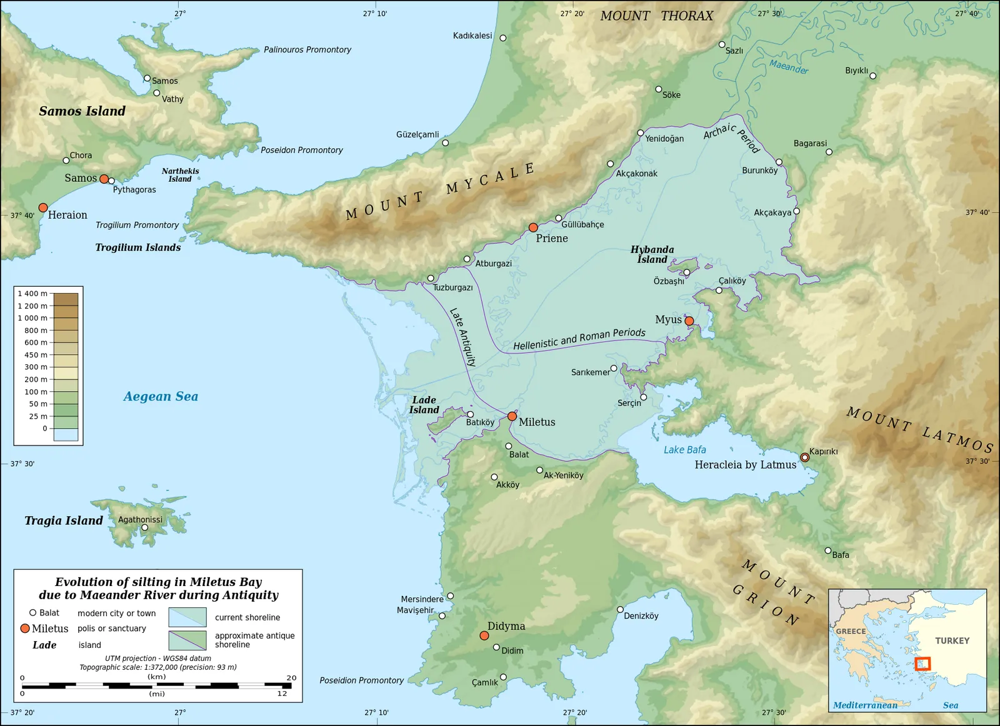
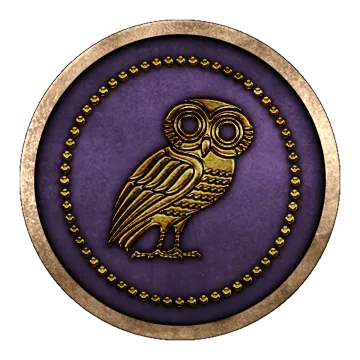
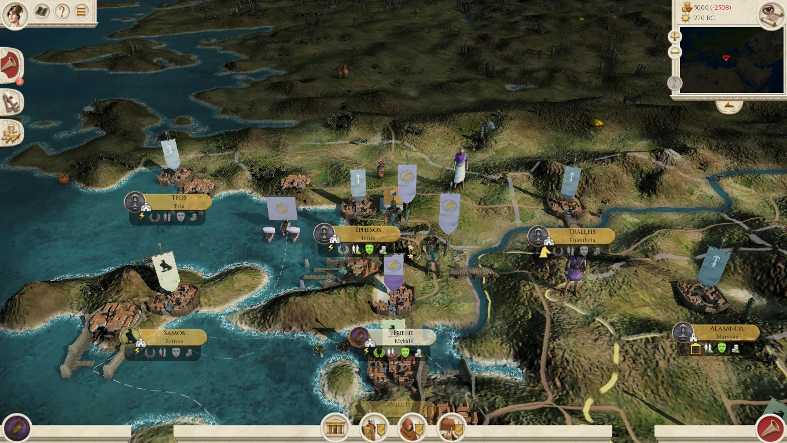
Prienian Ephebes
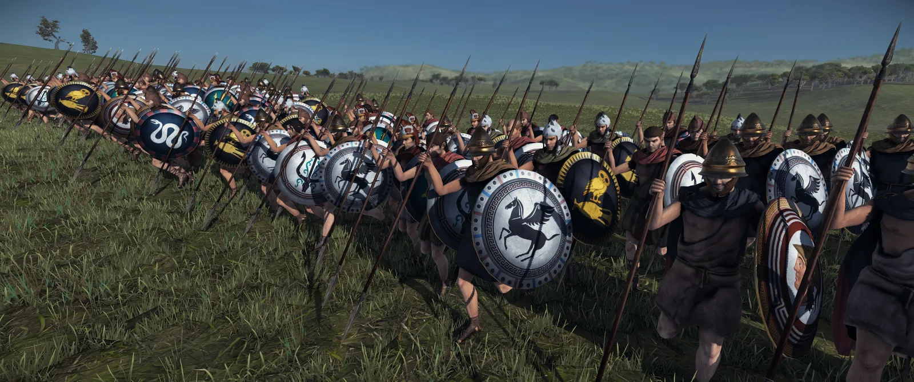
Prienian Hoplites
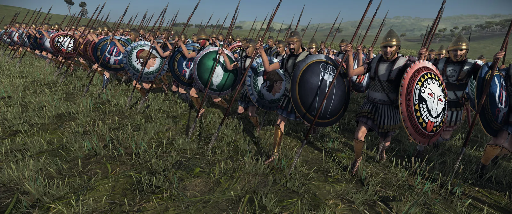
Prienian Epilektoi
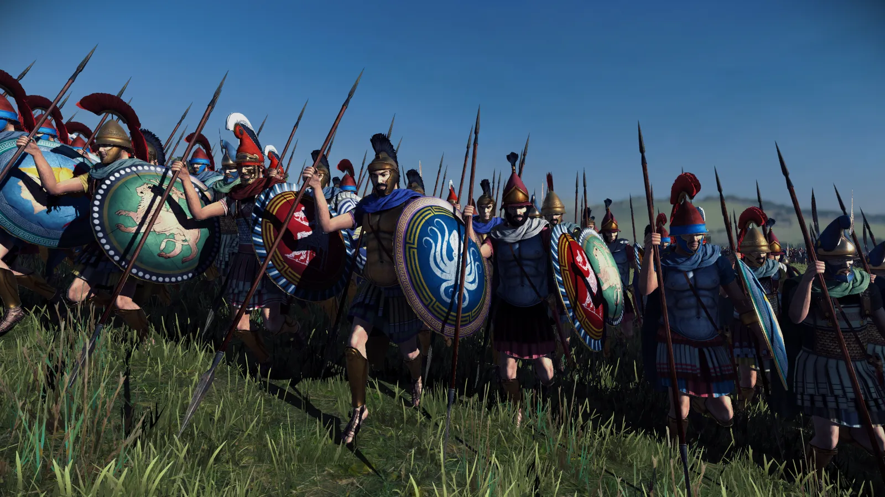
Prienian Hippotrophoi
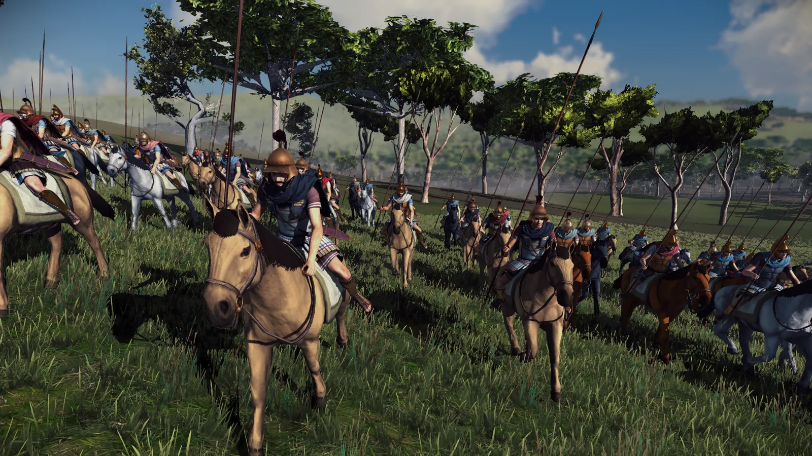
Our final faction in this dev diary is the greatest city of Ionia, MILETOS. The city was located on a peninsula, later called Milesia, that guarded the entrance into the largest bay of Ionia. The strategic location allowed the Milesians to control both maritime and land trade between the Aegean and Western Asia Minor along the Maiandros river, and with Didyma on the southern side of Milesia, they controlled one of the most important sanctuaries in the Greek world. Due to its many advantages, the site was first settled in the 5th millennium BC, and by the 2nd millennium, it had become the most important Mycenean settlement in Asia: the Hittites called the thriving town, which lay in the centre of many wars during the 13th century BC, Millawa. Yet, early Miletos suffered destruction in the Late Bronze Age, just like other Mycenean sites, and when it reappears in the Iliad, it is described as a city of the Carians. These mixed with the existing Mycenean population and Ionian immigrants and soon Miletos became known as the capital of the Ionians. The wealthy and powerful Milesians played a crucial role in Greek colonisation and may have followed a strategic design with their foundations: almost all of these *apoikiai*, among them Abydos, Istros, Olbia, Pantikapaion and Sinope, can be found on the Black Sea. And though the political ties between these colonies and their *metropolis* (mother city) were often only loose, the Black Sea did become a Milesian sea to a certain extent, as its local cults, philosophies, institutions and laws were established on all shores of the Pontos Euxeinos ("the friendly sea"), which was at times called Pontos Axeinos ("the unfriendly sea"). At the same time, Milesian merchants had established a foothold in Egypt and participated in the foundation of the Greek trading port Naukratis, while other Milesians served the pharaos as mercenaries.
The colonies of Miletos by time of foundation (in Italian)
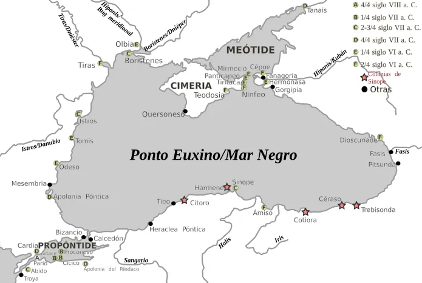
Around 600 BC, Miletos was arguably the largest, richest and most important Greek city. Accordingly, it was the first Polis to mint its own coins, and it resisted the attacks of both the wandering Cimmerians as well as the Lydians under king Gyges, whose fleet was utterly defeated by the Milesian navy. In the Archaic period, the city was under the rule of tyrants, and successful expeditions against Naxos and Priene, the smaller, but eternal rival of the Milesians, demonstrate that Miletos cemented its position among the Ionian cities whenever it was challenged. Thanks to its extraordinary position, Miletos also became the mother of Greek philosophy and science. It was here that Thales, Anaximandros or Anaximenes discussed mathematics, geography and physics in the 6th century BC, and later scholars like Herodotus or Socrates owed much to the so called Milesian School. This atmosphere continued under the official suzerainty of Kroisos of Lydia and Kyros the Great of Persia, but at the end of the 6th century, Miletos felt that Dareios planned to actually subjugate Miletos, like the Persians had already done with many other Greek cities.
Under the tyrants Histiaios and Aristagoras, Miletos led its neighbours into the Ionian Revolt (499-494 BC), which ended in defeat: Miletos was destroyed and its inhabitants deported, if we are to believe Herodotus. Yet, some most have remained, as Miletos already appears as a member of the Delian League in 450 BC and paid an annual contribution of 10 talents - more than all of the Aegean Islands combined. Though the mainland Greeks spoke of the decay of the Ionians, Miletos seems to have recovered quickly after 494 BC, and in 412 BC its betrayal of Athens became a decisive moment in the Peloponnesian War. After the Spartan victory, civil wars broke out in Miletos for twenty years, but in the time of Mausolos of Caria (r. 377-353 BC) the booming city was one of the most priced possessions within the Persian Empire. It is thus no surprise that Alexander immediately marched to Miletos after crossing into Asia in 334 BC, nor that the Persians had lain a huge garrison into the town, which fought until the last.
On the eve of the Hellenistic era, then, Miletos had lost much of its political autonomy, but it was still one of the most significant cities in the Greek world. Visitors were awed by its large temples and its schematic grid plan, developed by the architect Hippodamos of Miletos, which gives the impression of an ancient Manhattan. In 279 BC, after the deaths of Lysimachos and Seleukos I, the Ptolemies secured control of the city, donated new land to it and installed a man called Timarchos as governor. In 262 BC, Ptolemaios Epigonos, the son of Lysimachos and Arsinoe, sister and now wife of Ptolemaios II, arrived in Miletos as the new Ptolemaic strategos of Asia Minor. Three years later, Ptolemy II apparently gave the order for his nephew to return to Egypt, but Timarchos convinced Epigonos to rebel. At the same time, the Second Syrian War between Ptolemies and Seleucids broke out, and Antiochos II hurried to march to Miletos, killed Timarchos and freed the city. Ptolemaios Epigonos, meanwhile, was forgiven and he would rule the city of Telmessos in Lycia until his death, with his descendants later succeeding him. Miletos, meanwhile, was now officially under Seleucid protection, but it wielded some considerable autonomy which grew over the years when Seleucid ruler in Anatolia was challenged time and again. Alliance and Friendship treaties with Tralleis (212 BC), Mylasa (209), Pidasa (188) and Herakleia at Latmos (185) strengthened its position vis-a-vis its arch rival Priene and Magnesia on the Maiandros, another hostile Polis.
The Milesians also managed to expand their territory and annexed land in the valley of the Maiandros during the 230s BC, which was settled with 1000 Cretan mercenaries and their families - the basis for the Milesian Neocretans in RIS. After twenty years of residence, the Cretans obtained full citizen rights. Some of its colonies were still dependent on Miletos as well: Kios, its own faction in RIS, sent contributions to sacrificies and had to dispatch soldiers whenever Miletos was attacked, and in 188 BC, the Carian fortress Pidasa, which the Persians had erected against Miletos, was overwhelmed, its inhabitants abducted to Miletos and the place itself garrisoned by Milesians.
After this long ride through Milesian history, it remains to be said that Miletos continued to prosper under the Roman dominion, which arrived in 188 BC. Like many other Greek cities with a proud past, it profitted from the philhellenic attitude of many senators and emperors and enlarged its chora (territory) further. As late as the 15th century, Miletos, as Milas, was the capital of local strongholders, and the site was settled until 1955, when the last inhabitants were driven out by an earthquake. As you will now know, in 270 BC Miletos was a Ptolemaic city, governed by Timarchos. It is thus not a starting faction in RIS, but an emergent one. Ever happy to use the opportunity for a revolt, the Milesian oligarchs and tyrants will eventually make their appearance in your campaign, hellbent on destroying the radical democracy in Priene and rebuilding, or just building, a colonial empire on the Black Sea. Oh, and reviving Milesiaka literature, which, and I am serious here, was the first porn genre in human literature, invented by our dear Milesians in the 2nd century BC, and usually involving an unrealistic adventure story with absurd twists that lead to explicit sex scenes. The stories were usually set in Miletos as well, because it was seen as the capital of luxury, sex, drugs and loud teenage kithara music. Good on them.
The grid plan of Miletos as designed by Hippodamos:
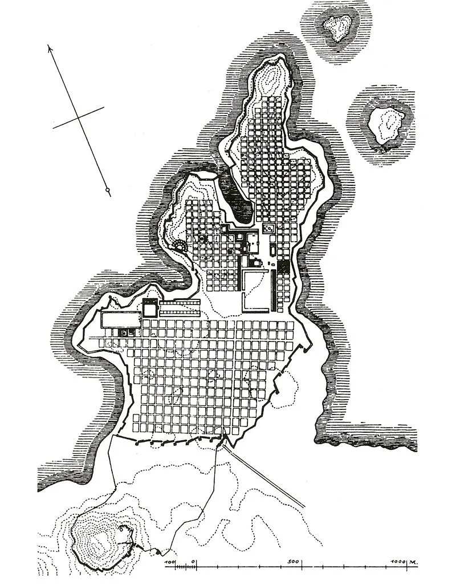
The Market gate of Miletos, now in the Pergamonmuseum, Berlin
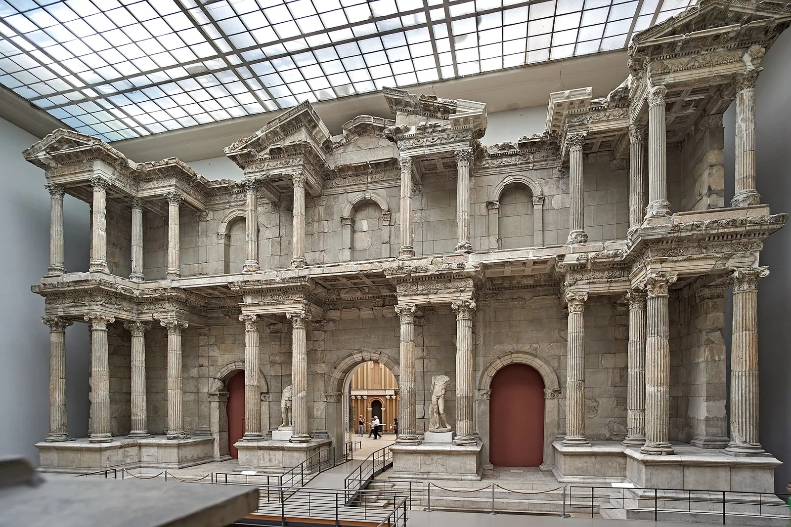
The theater of Miletos today
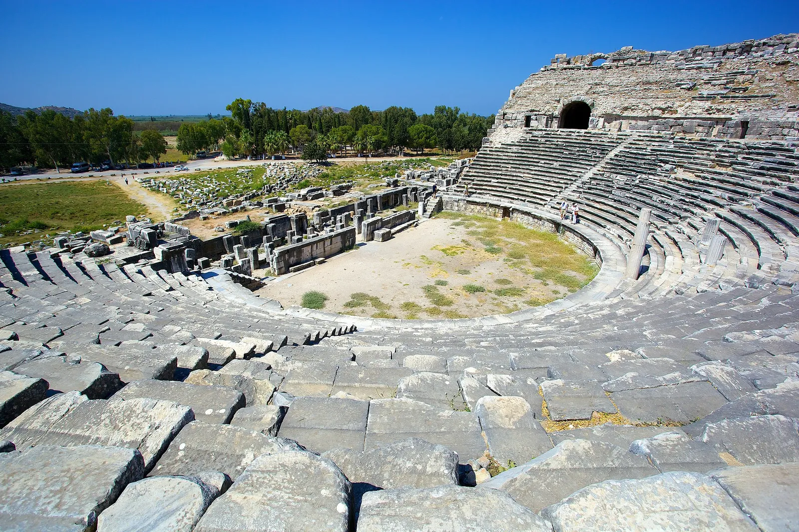
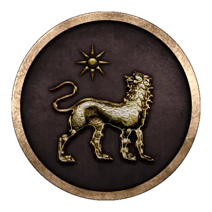
Miletos is an Emergent faction from the Ptolemies
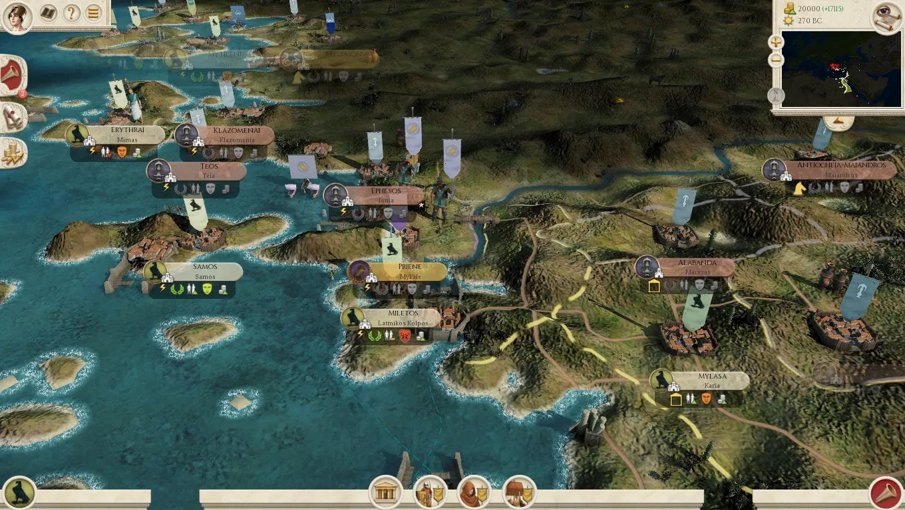
Milesian Neo-Cretan Archers
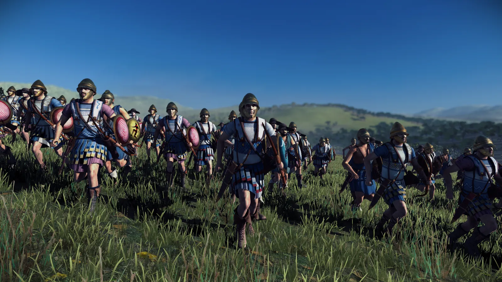
Milesian Horophylakes
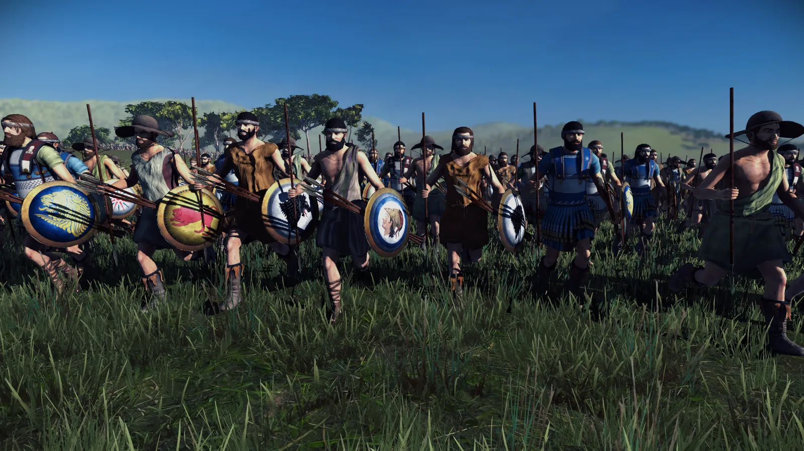
Milesian Hoplites
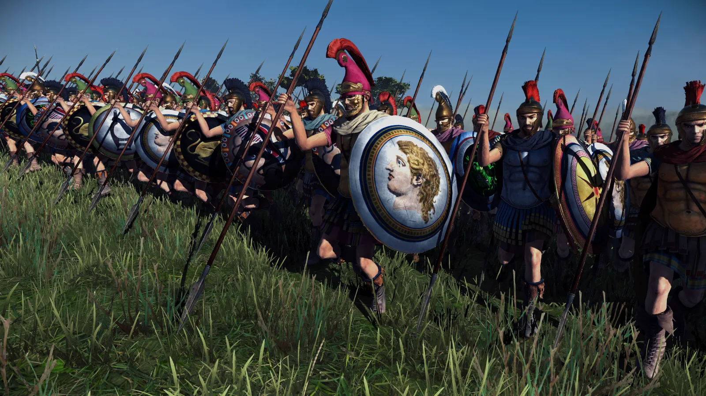
There are also a couple of Greek AoR units in this showcase area!
Smyrnaian Ephebes
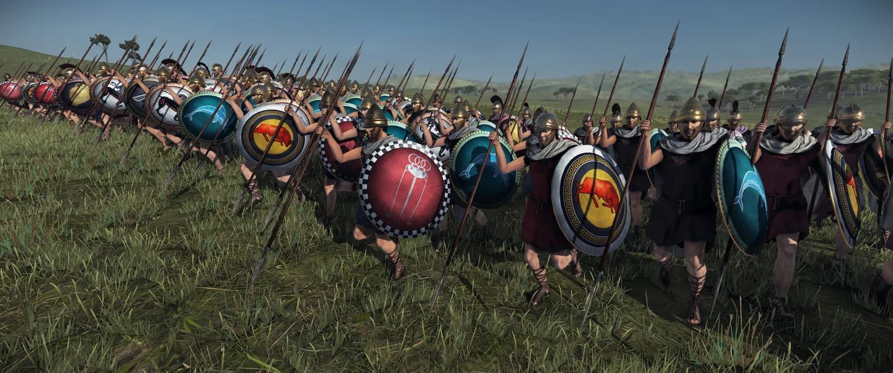
Ionian Epibatai
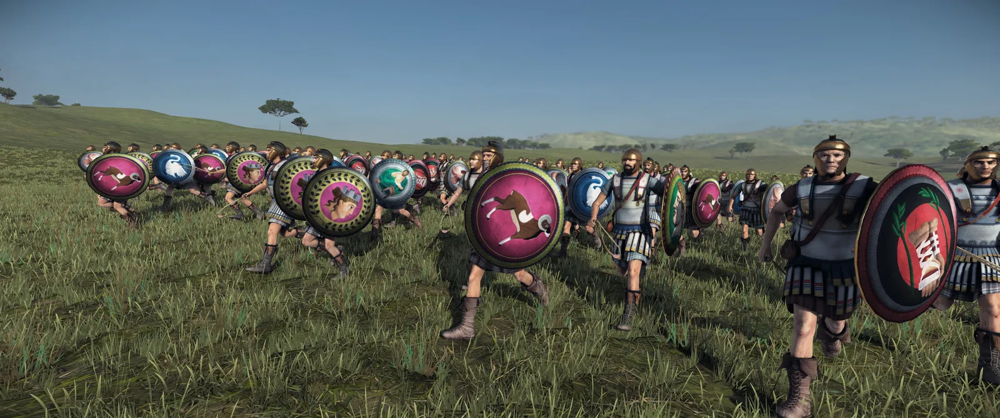
Thus concludes our dev diary today, we have one more to show on our new Minor Greeks, and also, be on the lookout for the interview today between Red Zed @ Mausolos at 4PM BST!

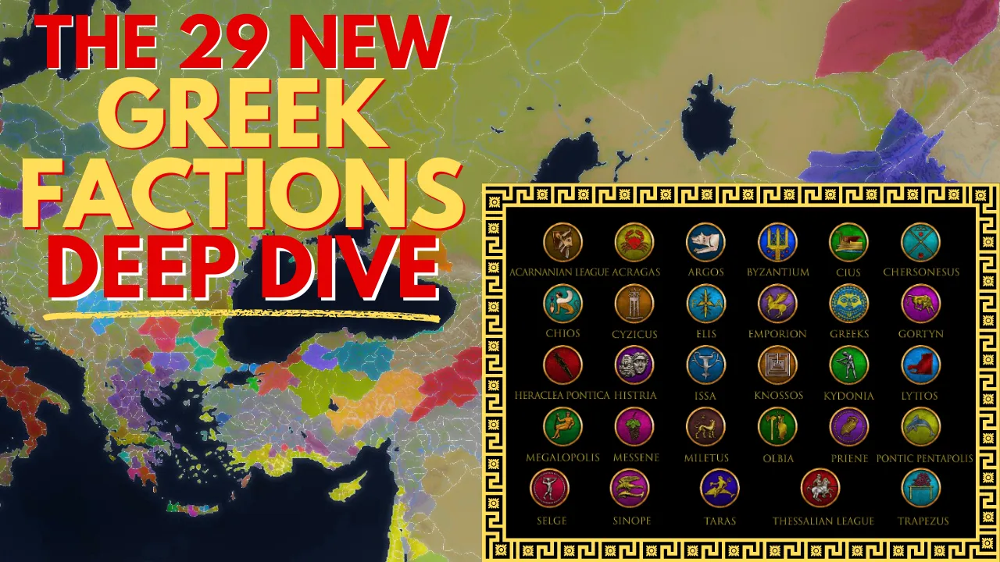